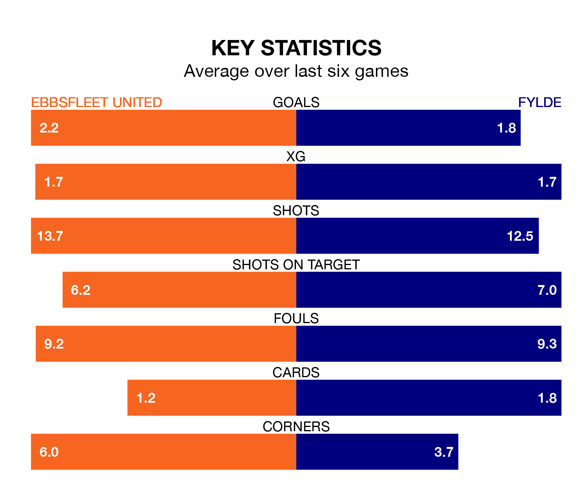

Fylde travel to Ebbsfleet United on Saturday in the National League.
The visitors come into the game on the back of a win in their last match, having beaten Oldham Athletic 3-1 away, with goals from Nicholas George Haughton, Adam Long and Ethan Mitchell.
Ebbsfleet, meanwhile, drew their last match, 1-1 against Dagenham and Redbridge, with their goal scored by Billy Clifford.
With 71 goals in 42 games so far this season, Fylde are scoring more than average in the league with 1.7 goals per game. But they are conceding more than average too, letting in 75 goals at a rate of 1.8 per game.
Ebbsfleet, meanwhile, are below average scorers, with 1.4 goals per game, compared to a league average of 1.5. They have conceded 1.7 goals per game.
In the last 10 years, Ebbsfleet and Fylde have played each other on six occasions. Fylde won three of them and they drew three times.
On average, Ebbsfleet scored 1.0 goal and the Coasters 1.8 in those matches.
Their last meeting was on October 21, when they played out a 1-1 draw.
United are 19th in the table after 41 games, of which they have won 13 and drawn 10, earning 49 points.
The Coasters are five places ahead of the hosts in 14th, with 14 wins and 10 draws putting them on 52 points.
Ebbsfleet are in reasonable form in the National League, with three wins and two draws from their last six games.
With three wins and a draw over that period, the away team's form is slightly worse – they have taken 10 points from 18, compared to Ebbsfleet's 11.
Updated: 16:41 (UTC), 04/04/24